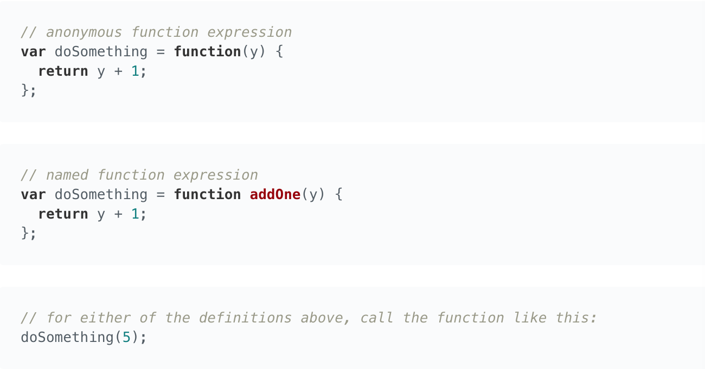
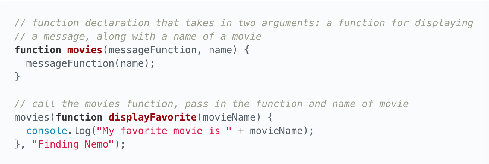

I'm a self taught web developer working towards a successful career in software development.
Global variables, variables declared outside of functions, are available everywhere. The advantage of this is that you have the abilit to access these variables at any point in a program. However, this methodology is NOT scalable and should be avoided. Variables should live at a local level within functions whenever possible.
The JavaScript engine will look in the current function for a variable. If the variable is not found it will proceed to the next outer function and so on. It will continue this search until reaching the global scope level.
At the end of the day the big idea is this: global variables can lead to messy code, poor naming conventions, and conflicting code.
This was something new. Every course I took centered around JavaScript did not address hoisting.
Important Concept: JavaScript will hoist function and variable declarations to the top of the current scope.
However, variable assignments are not hoisted. Meaning if you happen to declare a variable used in a function at the end of the function, it will not work.
Declare functions and variables at the top of your scripts, so the syntax and behavior are consistent with each other.
Function Expression: When a function is assigned to a variable. The function can be named, or anonymous. Use the variable name to call a function defined in a function expression.
In addition, if you're writing a function that you're 100% certain will only ever be used in that instance then you can write the function inline.
Source: Udacity Grow With Google Scholarship
Welcome to my first blog. I built this website to serve as a place where I can dump all my notes and thoughts during my web development journey.
So far I've dabbled in:
I'll continue to come back and drop in notes from these courses overtime